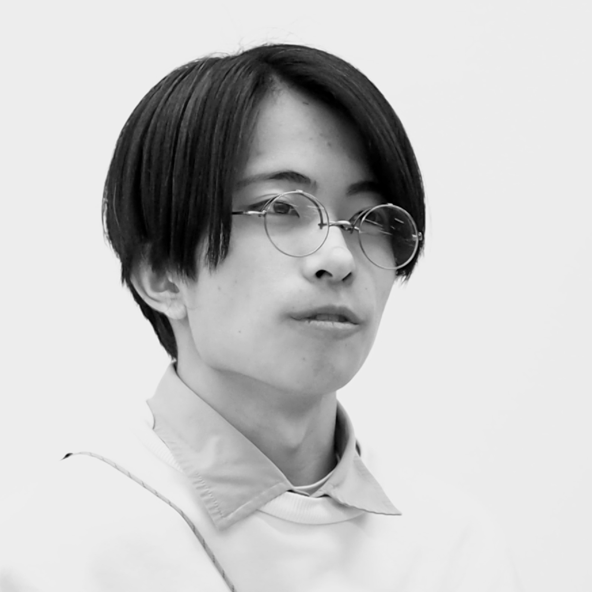

代表取締役社長
八重樫 蓮太郎
出身地 北海道美唄市
経歴 東京のIT企業で10年間のキャリアを積んだ後、地元美唄に戻りPITAAANテクノロジー株式会社を創業
趣味 美唄の自然散策、地域イベントの企画
メンバー紹介

代表取締役社長
出身地 北海道美唄市
経歴 東京のIT企業で10年間のキャリアを積んだ後、地元美唄に戻りPITAAANテクノロジー株式会社を創業
趣味 美唄の自然散策、地域イベントの企画

代表取締役副社長
出身地 アメリカ合衆国
経歴 海外での事業開発経験を活かし、PITAAANテクノロジー株式会社の成長戦略を牽引
専門分野 事業企画・海外展開
趣味 スノーボード、海外の建築見学

デザインリーダー
出身地 北海道美唄市
経歴 東京の制作会社で5年間グラフィックデザインを経験
後、Ｕターン
専門分野 Webデザイン、グラフィックデザイン、UIとその体験
趣味 美唄の四季を撮影

開発リーダー
出身地 北海道札幌市
経歴 フリーランスエンジニアを経て、PITAAANテクノロジー株式会社に参画
専門分野 フロントエンド・バックエンド開発、システム設計
趣味 最新技術のキャッチアップ

営業リーダー
出身地 北海道函館市
経歴 地域密着型営業で数々の案件を成功に導く
専門分野 顧客開拓、提案営業、プロジェクト管理
趣味 地域のお祭り参加、ゴルフ

広報リーダー
出身地 北海道帯広市
経歴 メディア業界出身、PITAAANテクノロジー株式会社のブランド価値向上を担当
専門分野 PR戦略、コンテンツマーケティング、SNS運用
趣味 ブログ執筆、美唄グルメ探索

フォトグラファー
出身地 北海道美唄市
経歴 地元愛溢れるフォトグラファーとして活動、PITAAANテクノロジー株式会社の撮影全般を担当
専門分野 商品撮影、ポートレート、風景写真
趣味 そば打ち

3D・CADリーダー
出身地 北海道美唄市
経歴 建築設計事務所で経験を積み、3D技術のスペシャリストとしてPITAAANテクノロジー株式会社に参画
専門分野 3D建築模型、CAD設計、3Dプリント
趣味 美唄の歴史探索
少数精鋭の20名で、20代〜60代まで様々な経験を持つメンバーが在籍
美唄市とその周辺地域への深い愛着を持つメンバーが多数
個人のスキルアップと会社の成長を共に追求
職場の垣根を越えた良好な人間関係
私たちと一緒に、美唄から新しいクリエイティブを発信しませんか？